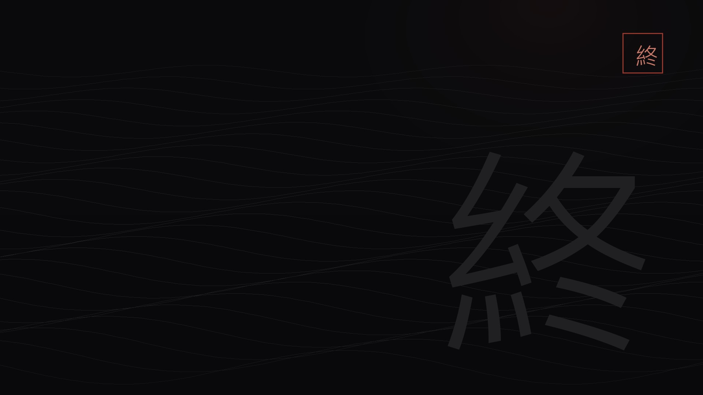

系統錯過不再
結局分支
斷魂山・最終區域
擊敗夢華後：若已完成全部真結局條件（十個紫色任務＋五根龍柱），左殤會現身，帶你進入金色光柱，挑戰真最終頭目左殤（真龍），觸發真結局與獎盃【昭昭心與血】。若未完成，夢華死後直接播放結局，沒有左殤戰。
錯過條件真結局條件必須在進斷魂山前完成；這裡是最後確認點。
真結局／普通結局

斷魂山是最終章，只有三個頭目，卻決定你看到哪一個結局。進入最終頭目區域前，【最後的挽回之地】會給最後一次警告；越過之後無法離開，直到結局播完。
進入最終頭目區域前，斷魂山鈴鐺【最後的挽回之地】會給最後一次警告。無論你是否完成真結局條件都會出現；越過之後，在結局完成前無法離開。
只保留確認對應的頭目實機畫面；其餘一律用名刺卡，避免圖不對題。
 頭目名刺
頭目名刺
 頭目名刺
頭目名刺
 頭目名刺
頭目名刺
 頭目名刺・會錯過
頭目名刺・會錯過
完成度只存在你的瀏覽器；換裝置不會同步。